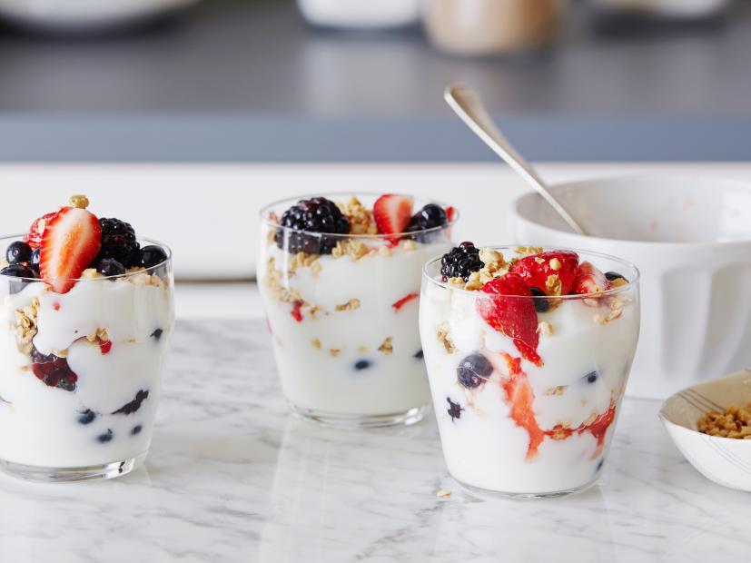

Yogurt Parfaits

A delicious breakfast option
Recipe credit: Rachel Ray - Food Network
Ingredients
- 3 cups vanilla nonfat yogurt
- 1 cup fresh or defrosted straberries in juice
- 1 pint fresh blackberries, raspberries, or blueberries
- 1 cup good quality granola
Steps
-
Layer 1/3 cup vanilla yogurt into the
bottom each of 4 tall glasses
-
Combine defrosted strawberries and juice
with fresh berries
-
Alternate layers of fruit and granola with yogurt
until glasses are filled to the top
-
Serve parfaits immediately to keep granola
crunchy